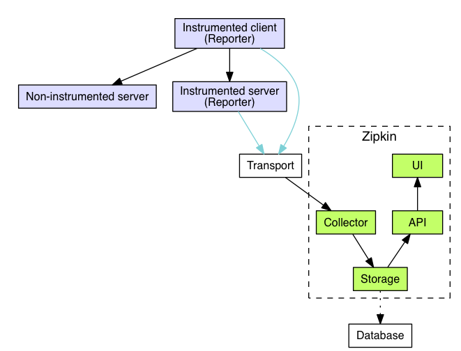
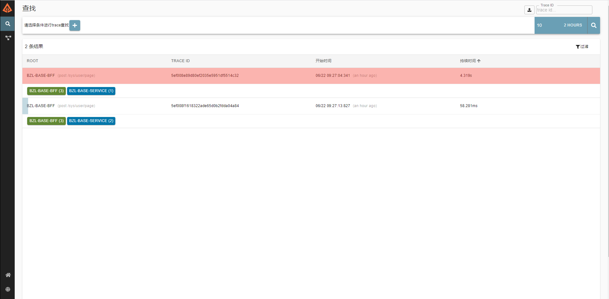
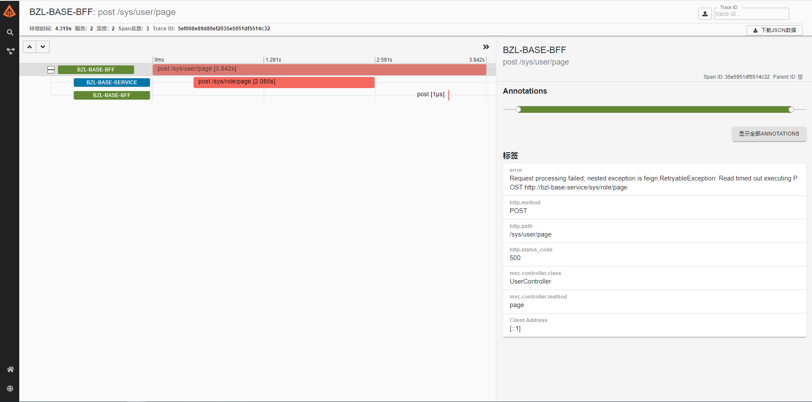

1. 官方链接
2.一些概念和知识点
数据流转图
开源分布式跟踪系统，Twitter公司开源
作用
- 查看服务调用的大局观，分析服务间调用关系
- 分析服务调用耗时
- 分析服务调用异常问题
四大组件
- collector
对链路数据进行验证、存储、建立索引的操作 - storage
对数据进行存储，默认情况下使用Cassandra。storage组件被设计成插件化，除了Cassandra外，还支持ElasticSearch和MySQL - search（Zipkin Query Service）
一旦数据被存储以及建立索引，搜索守护进程就能提供一个JSON格式的API来进行链路数据的查找。web UI内部使用的就是这个API - web UI
提供一个友好的用户界面，展示链路数据关联的服务、耗时和注解等信息。特别地，该UI并没有身份验证能力。
- collector
数据传输方式
- http：默认方式
- RabbitMQ
- Kafka
设置spring.zipkin.sender.type: kafka
安装方式
- 结合springcloud启动zipkin服务，让eureka进行服务发现
- 通过docker安装
- 通过jar包执行java -jar安装
- 源码安装
高可用考虑
- 通过kubernetes保证至少存在一个副本
3. 安装配置，使用MySQL作为存储方式
数据库配置
1
2
3
4# Barracuda supports compression (In AWS RDS, this must be assigned in a parameter group)
mysql -uroot -e "SET GLOBAL innodb_file_format=Barracuda"
# This command should work even in RDS, and return "Barracuda"
mysql -uroot -e "show global variables like 'innodb_file_format'"SQL DDL
1
2
3
4
5
6
7
8
9
10
11
12
13
14
15
16
17
18
19
20
21
22
23
24
25
26
27
28
29
30
31
32
33
34
35
36
37
38
39
40
41
42
43
44
45
46
47
48
49
50
51
52
53
54
55
56
57--
-- Copyright 2015-2019 The OpenZipkin Authors
--
-- Licensed under the Apache License, Version 2.0 (the "License"); you may not use this file except
-- in compliance with the License. You may obtain a copy of the License at
--
-- http://www.apache.org/licenses/LICENSE-2.0
--
-- Unless required by applicable law or agreed to in writing, software distributed under the License
-- is distributed on an "AS IS" BASIS, WITHOUT WARRANTIES OR CONDITIONS OF ANY KIND, either express
-- or implied. See the License for the specific language governing permissions and limitations under
-- the License.
-
CREATE TABLE IF NOT EXISTS zipkin_spans (
`trace_id_high` BIGINT NOT NULL DEFAULT 0 COMMENT 'If non zero, this means the trace uses 128 bit traceIds instead of 64 bit',
`trace_id` BIGINT NOT NULL,
`id` BIGINT NOT NULL,
`name` VARCHAR(255) NOT NULL,
`remote_service_name` VARCHAR(255),
`parent_id` BIGINT,
`debug` BIT(1),
`start_ts` BIGINT COMMENT 'Span.timestamp(): epoch micros used for endTs query and to implement TTL',
`duration` BIGINT COMMENT 'Span.duration(): micros used for minDuration and maxDuration query',
PRIMARY KEY (`trace_id_high`, `trace_id`, `id`)
) ENGINE=InnoDB ROW_FORMAT=COMPRESSED CHARACTER SET=utf8 COLLATE utf8_general_ci
ALTER TABLE zipkin_spans ADD INDEX(`trace_id_high`, `trace_id`) COMMENT 'for getTracesByIds';
ALTER TABLE zipkin_spans ADD INDEX(`name`) COMMENT 'for getTraces and getSpanNames';
ALTER TABLE zipkin_spans ADD INDEX(`remote_service_name`) COMMENT 'for getTraces and getRemoteServiceNames';
ALTER TABLE zipkin_spans ADD INDEX(`start_ts`) COMMENT 'for getTraces ordering and range'
CREATE TABLE IF NOT EXISTS zipkin_annotations (
`trace_id_high` BIGINT NOT NULL DEFAULT 0 COMMENT 'If non zero, this means the trace uses 128 bit traceIds instead of 64 bit',
`trace_id` BIGINT NOT NULL COMMENT 'coincides with zipkin_spans.trace_id',
`span_id` BIGINT NOT NULL COMMENT 'coincides with zipkin_spans.id',
`a_key` VARCHAR(255) NOT NULL COMMENT 'BinaryAnnotation.key or Annotation.value if type == -1',
`a_value` BLOB COMMENT 'BinaryAnnotation.value(), which must be smaller than 64KB',
`a_type` INT NOT NULL COMMENT 'BinaryAnnotation.type() or -1 if Annotation',
`a_timestamp` BIGINT COMMENT 'Used to implement TTL; Annotation.timestamp or zipkin_spans.timestamp',
`endpoint_ipv4` INT COMMENT 'Null when Binary/Annotation.endpoint is null',
`endpoint_ipv6` BINARY(16) COMMENT 'Null when Binary/Annotation.endpoint is null, or no IPv6 address',
`endpoint_port` SMALLINT COMMENT 'Null when Binary/Annotation.endpoint is null',
`endpoint_service_name` VARCHAR(255) COMMENT 'Null when Binary/Annotation.endpoint is null'
) ENGINE=InnoDB ROW_FORMAT=COMPRESSED CHARACTER SET=utf8 COLLATE utf8_general_ci
ALTER TABLE zipkin_annotations ADD UNIQUE KEY(`trace_id_high`, `trace_id`, `span_id`, `a_key`, `a_timestamp`) COMMENT 'Ignore insert on duplicate';
ALTER TABLE zipkin_annotations ADD INDEX(`trace_id_high`, `trace_id`, `span_id`) COMMENT 'for joining with zipkin_spans';
ALTER TABLE zipkin_annotations ADD INDEX(`trace_id_high`, `trace_id`) COMMENT 'for getTraces/ByIds';
ALTER TABLE zipkin_annotations ADD INDEX(`endpoint_service_name`) COMMENT 'for getTraces and getServiceNames';
ALTER TABLE zipkin_annotations ADD INDEX(`a_type`) COMMENT 'for getTraces and autocomplete values';
ALTER TABLE zipkin_annotations ADD INDEX(`a_key`) COMMENT 'for getTraces and autocomplete values';
ALTER TABLE zipkin_annotations ADD INDEX(`trace_id`, `span_id`, `a_key`) COMMENT 'for dependencies job'
CREATE TABLE IF NOT EXISTS zipkin_dependencies (
`day` DATE NOT NULL,
`parent` VARCHAR(255) NOT NULL,
`child` VARCHAR(255) NOT NULL,
`call_count` BIGINT,
`error_count` BIGINT,
PRIMARY KEY (`day`, `parent`, `child`)
) ENGINE=InnoDB ROW_FORMAT=COMPRESSED CHARACTER SET=utf8 COLLATE utf8_general_ci;docker部署
1
2
3
4
5
6
7
8
9
10docker run -d \
--name zipkin \
-e STORAGE_TYPE=mysql \
-e MYSQL_DB=zipkindb \
-e MYSQL_USER=root \
-e MYSQL_PASS=root \
-e MYSQL_HOST=192.168.56.1 \
-e MYSQL_TCP_PORT=3306 \
-e QUERY_PORT=9411 \
-p 9411:9411 openzipkin/zipkinJar部署
1
2
3
4
5
6
7
8STORAGE_TYPE=mysql \
MYSQL_DB=zipkindb_jar \
MYSQL_USER=root
MYSQL_PASS=root \
MYSQL_HOST=192.168.56.1 \
MYSQL_TCP_PORT=3306 \
QUERY_PORT=9411
nohup java -jar zipkin.jar > zipkin.log 2>&1 &Kubernetes部署
- Secret
1
2
3
4
5
6
7
8
9
10
11
12
13kind: Secret
apiVersion: v1
metadata:
name: secret-zipkin-server
namespace: xxx
labels:
app: secret-zipkin-server
data:
# 数据库账号
username: cm9vdA==
# 数据库密码
password: QmRyTWVzQDIwMjBCWkw=
type: Opaque - Service
1
2
3
4
5
6
7
8
9
10
11
12
13
14
15
16
17
18kind: Service
apiVersion: v1
metadata:
name: service-zipkin-server
namespace: xxx
labels:
app: service-zipkin-server
spec:
ports:
- protocol: TCP
port: 9411
targetPort: 9411
# 对外暴露端口
nodePort: 32710
selector:
app: zipkin-server
type: NodePort
sessionAffinity: ClientIP - Deployment
1
2
3
4
5
6
7
8
9
10
11
12
13
14
15
16
17
18
19
20
21
22
23
24
25
26
27
28
29
30
31
32
33
34
35
36
37
38
39
40
41
42
43
44
45
46
47
48
49
50
51
52
53
54
55
56
57
58
59
60
61
62
63
64
65
66
67
68
69
70
71
72
73
74
75
76
77
78
79
80
81
82
83
84
85
86
87kind: Deployment
apiVersion: apps/v1
metadata:
name: deployment-zipkin-server
namespace: xxx
labels:
app: zipkin-server
spec:
# 副本数配置
replicas: 3
selector:
matchLabels:
app: zipkin-server
template:
metadata:
labels:
app: zipkin-server
spec:
containers:
- name: container-zipkin-server
image: 'openzipkin/zipkin:2.23.2'
# 端口配置
ports:
- containerPort: 9411
protocol: TCP
# 环境变量配置
env:
- name: STORAGE_TYPE
value: mysql
- name: MYSQL_HOST
value: xxx
- name: MYSQL_TCP_PORT
value: 'xxx'
- name: MYSQL_DB
value: xxx
- name: MYSQL_USER
valueFrom:
secretKeyRef:
name: secret-zipkin-server
key: username
- name: MYSQL_PASS
valueFrom:
secretKeyRef:
name: secret-zipkin-server
key: password
- name: QUERY_PORT
value: '9411'
# 存活探针配置
livenessProbe:
tcpSocket:
port: 9411
initialDelaySeconds: 120
timeoutSeconds: 1
periodSeconds: 15
successThreshold: 1
failureThreshold: 3
# 就绪探针配置
readinessProbe:
tcpSocket:
port: 9411
initialDelaySeconds: 10
timeoutSeconds: 1
periodSeconds: 5
successThreshold: 1
failureThreshold: 3
securityContext:
privileged: true
# 亲和性配置
affinity:
podAntiAffinity:
preferredDuringSchedulingIgnoredDuringExecution:
- weight: 100
podAffinityTerm:
labelSelector:
matchExpressions:
- key: app
operator: In
values:
- zipkin-server
topologyKey: kubernetes.io/hostname
schedulerName: default-scheduler
# 更新策略配置
strategy:
type: RollingUpdate
rollingUpdate:
maxUnavailable: 1
maxSurge: 1
- Secret
开放端口
1
2firewall-cmd --permanent --zone=public --add-port=9411/tcp
systemctl restart firewalld
4. 项目中使用
pom中引入zipkin依赖，同时子依赖sleuth也会被依赖了
1
2
3
4<dependency>
<groupId>org.springframework.cloud</groupId>
<artifactId>spring-cloud-starter-zipkin</artifactId>
</dependency>properties中配置
1
2
3
4
5
6
7
8# 启动sleuth，默认spring检测到引入了sleuth就会默认启动了
spring.sleuth.web.client.enabled=true
# trace-id的生成规则
spring.sleuth.trace-id128=true
# 数据采样比例，默认是0.1，全采样设置为1.0
spring.sleuth.sampler.probability=1.0
# zipkin服务IP
spring.zipkin.base-url=http://192.168.56.104:9411浏览器输入Zipkin服务地址点击搜索按钮即可看到微服务中的服务调用情况（红色表明有调用异常情况）


(•̀ᴗ•́)و ̑̑